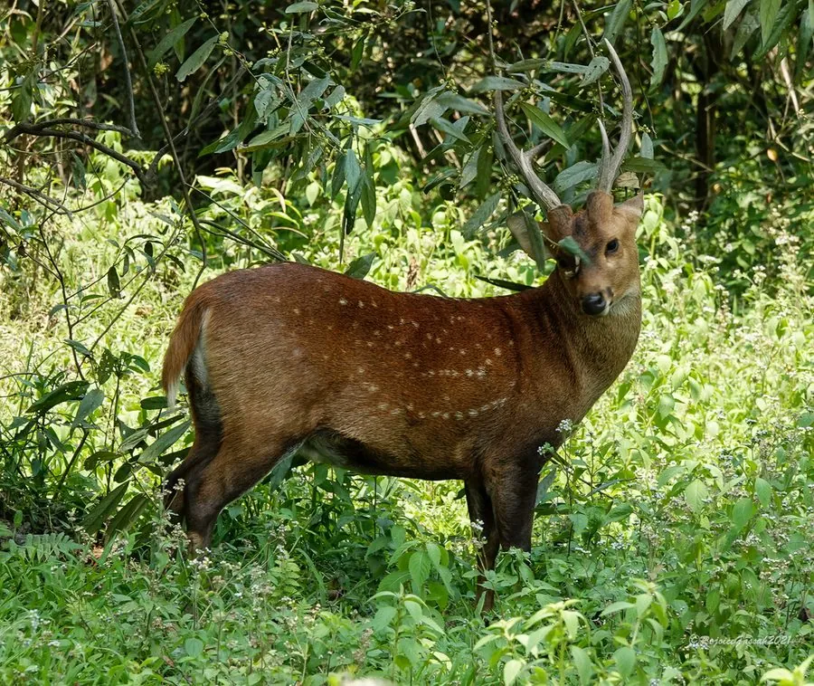

哺乳动物 · 动物界
豚鹿 Axis porcinus

体形矮壮、常弓背低头奔跑如猪的鹿类，毛色黄褐带浅斑，喜居河岸高草丛，中国云南南部边缘曾有分布，现为极危物种。
- 分类
- 门脊索动物门纲哺乳纲目偶蹄目科鹿科属豚鹿属
- 栖息环境
- 河流沿岸高草丛、沼泽湿地、冲积平原与甘蔗田
- 地理分布
- 印度北部、尼泊尔、孟加拉国、缅甸、泰国至越南南部；中国云南南部边缘曾有记录
- 保护级别
- IUCN 濒危（EN）；中国国家一级保护动物
物种志
豚鹿体形矮小而粗壮，四肢相对短，肩高约 60–75 厘米，体长 1.0–1.4 米，成年体重 30–50 千克，雄性略大。毛色黄褐至红褐，背脊色深，体侧散布浅色斑点，腹部与四肢内侧浅白；尾较短，尾下白色。它走路时习惯低头弓背、臀部略高，奔跑姿态像家猪，因而得名“豚鹿”，也叫猪鹿。雄鹿角短，通常只有三叉。
豚鹿栖息于河流沿岸的高草丛、沼泽湿地与冲积平原，偏爱芦草与甘蔗地一类高而密的植被，白天藏在草丛中休息，晨昏出来取食嫩草、芦苇与作物。它们多单独或成小群活动，性情谨慎，遇险时伏低身体借助草色隐蔽，被惊起后才急速奔跑。每年繁殖一胎，孕期约 220 天，每胎一仔，幼鹿带浅色斑点。由于湿地被开垦为农田、过度猎捕，其分布区大幅萎缩，东南亚部分种群已消失。
形态与习性
- 体长约 1.0–1.4 m，肩高 60–75 cm
- 体重约 30–50 kg，雄性略大
- 食性嫩草、芦苇、水生植物嫩芽与农作物
- 繁殖孕期约 220 天，每胎一仔，幼鹿带浅色斑点
- 鹿角雄鹿角短，通常仅三叉，每年脱换
- 活动节律晨昏取食，白天伏卧高草丛中隐蔽
- 种群现状全球数量持续下降，中国境内已多年无野外确证记录
趣味知识
- 豚鹿跑起来低着头、弓着背，姿态和家猪几乎一模一样。
- 它偏爱河岸的高草丛，遇险时伏地不动，靠草色把自己藏起来。
- 幼豚鹿身上有浅色斑点，长大后逐渐淡化。